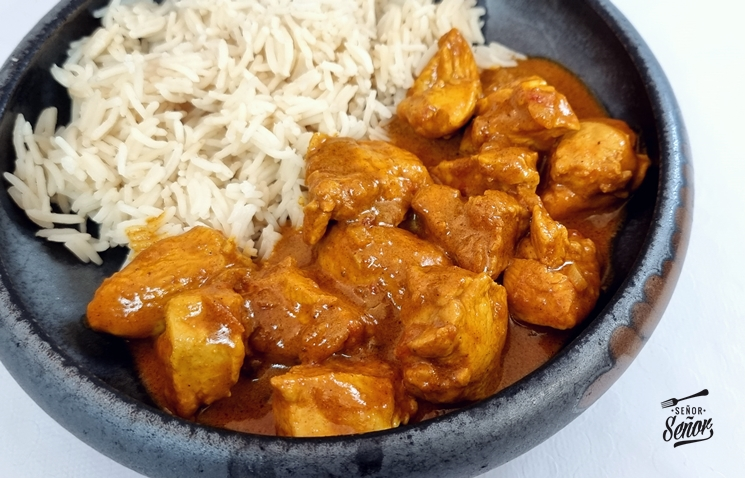
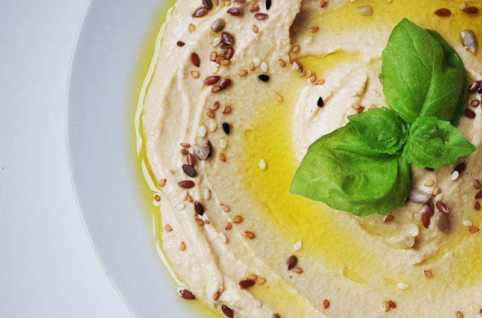
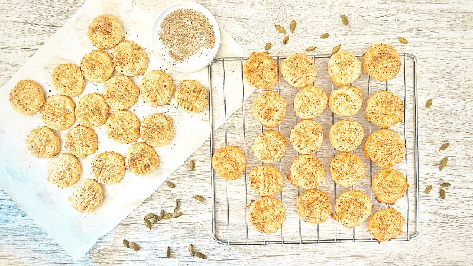

Recetas con Sabor
Te compartimos algunas recetas del mundo para que experimentes con nuestras especias en casa.

Curry de Pollo con Cúrcuma
Un plato reconfortante con leche de coco, cúrcuma, jengibre y un toque de chile.

Hummus al Comino
Tradicional receta de Medio Oriente. Perfecta como aperitivo o para untar.

Galletas de Cardamomo
Postre crujiente y aromático, ideal para acompañar un té chai o café.